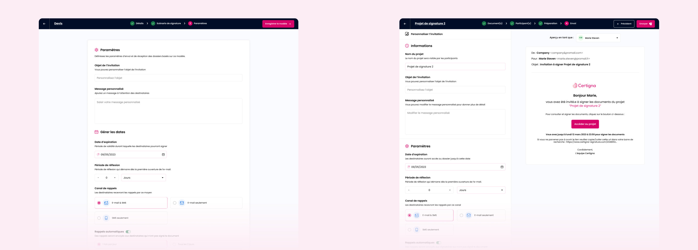

Signature en ligne
Design ProduitDans un marché ultra-concurrentiel, j'ai accompagné Certigna pour concevoir leur nouvelle solution de signature électronique personnalisée. L'enjeu était de combler un retard stratégique en un temps record, tout en créant une expérience fluide qui humanise et simplifie un processus légal souvent perçu comme rigide et complexe.




Défis UX & Méthodologies
Concevoir un produit de confiance dans l'urgence a nécessité une approche pragmatique et focalisée sur les points de friction critiques.
Continuité cross-device
Le défi majeur résidait dans la rupture de canal. J'ai orchestré le flux utilisateur entre la signature sur desktop et la vérification d'identité sur mobile (KYC), en m'assurant que la transition soit fluide, sécurisante et sans perte de contexte pour éviter le churn.
Recherche utilisateur en mode commando
Malgré des délais très courts, j'ai maintenu une phase de Guerilla Testing et d'interviews utilisateurs. Cela nous a permis d'identifier les freins psychologiques liés à la signature électronique et de valider nos hypothèses de parcours en temps réel.
Design émotionnel & Identité
J'ai décliné l'identité de Certigna au sein de l'interface pour renforcer la légitimité du service. L'enjeu était de trouver le juste équilibre entre une esthétique moderne et les codes rassurants de la cybersécurité.
Prototypage itératif
Pour accélérer la production sans sacrifier la qualité, j'ai travaillé par itérations rapides via des User Flows détaillés et des prototypes haute fidélité. Cette méthode a permis d'aligner instantanément les parties prenantes et de fournir des specs prêtes pour le développement (Hand-off).